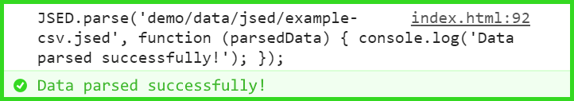
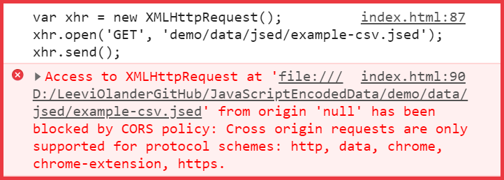

JSED - JavaScript Encoded Data
JSED is a file format that is a solution to the CORS error when AJAX requesting local resources from a locally executed HTML file. By implementing JSED one can develop configuration intensive and multifile applications, which require no installations by an end user and are locally executable. Alternatively, the application can be hosted on a server without any changes to the code.
JSED (Success)
XMLHttpRequest (Failure)
How JSED Works
- (Backend) Procure some data.
- (Backend) Convert the data to the JSED format.
- (Frontend) Include the JSED library and its dependencies in a client side application.
-
(Frontend) Specify the URL to a JSED file and call the JSED parse function.
- (JSED Library) JSED parse creates a new script element and set the source to the specified URL.
- (JSED Library) JSED parse sets up completion callback logic for the created script element.
- (JSED Library) JSED parse appends the created script element to the document head.
- (JSED Library) The appended script element gets executed and thus the function JSED execute is called.
- (JSED Library) JSED execute gets the originating script.
- (JSED Library) JSED execute decodes the encoded data.
- (JSED Library) JSED execute parses the decoded data.
- (JSED Library) JSED execute stores the parsed result in memory.
- (JSED Library) JSED execute calls the completion callbacks.
- (Frontend) Use the original data regardless of the execution context.
JSED works by encoding all data to a plain JavaScript compatible format, in other words the data is saved as raw executable JavaScript code. For example, the binary data of a .zip file can be BASE64 encoded in to a JavaScript compatible string. Thus, JSED is a wrapper over arbitrary file formats. See the example of how, for example, a JSON file can be converted to JSED.
JSON File Content
{
"name": "hello",
"content": "world"
}JSED File Content
JSED.execute("json", "text",
`
{
"name": "hello",
"content": "world"
}
`
);JSED Dependencies
The only dependency that must be included in the project is currentExecutingScript , however see "File Formats & Encodings" for the dependencies required by various formats.